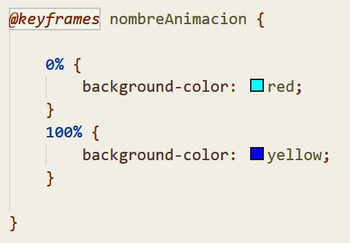

|
Definición
CSS o "Cascading Style Sheets" es un lenguaje de hojas de estilo
creado para controlar el aspecto de los documentos HTML.
CSS es la mejor forma de separar los contenidos de su presentación y es
imprescindible para crear páginas web complejas.
Un estilo CSS está formado de la siguiente manera: selector:pseudoselector { propiedad: valor; } Actualmente se encuentra en su tercera versión (CSS3), la cual fue lanzada en 2011 e incluyó muchas mejoras. 
|
Selectores
Los selectores son la referencia a la etiqueta, id o clase HTML a la que se le van a
aplicar una serie de estilos CSS.
Existen 4 tipos de selectores básicos: - Selector universal: * - Selector basado en etiqueta: input <input> - Selector basado en clase: .miClase <input class="miClase"> - Selector basado en ID: #miId <input id="miId"> Estos selectores pueden ser agrupados para definir varias propiedades comunes a diferentes elementos.
Pseudoselectores
Los pseudoselectores funcionan de la misma forma que los selectores ya explicados, pero con una pequeña diferencia:
Hacen referencia a estados de un elemento que no pueden ser definidos en el código. Por ejemplo, si queremos que un enlace tenga un color diferente cuando ya ha sido visitadao, usaríamos el pseudoselector :visited. Los pseudoselectores se escriben con dos puntos y detrás del selector, de la siguiente manera: selector:pseudoselector.
|
Propiedades
|
Responsividad

La responsividad de una página web es la capacidad que ésta tiene para adaptarse
al tamaño y formato de la pantalla en la que se está visualizando.
Vamos a ver el ejemplo de Instagram.
Es muy importante diferenciar entre un diseño responsivo y un diseño adaptativo. En la siguiente ilustración, podemos ver la diferencia: 
Por otro lado, para conseguir que un diseño sea responsivo tenemos que trabajar con unidades
relativas y evitar, en la medida de lo posible, las unidades estáticas:
A su vez, es muy importante mantener el flujo de los elementos cuando éstos cambien de tamaño. De esta forma,
evitaremos que se solapen unos con otros.

También es interesante trabajar con «puntos de ruptura». Es decir, si estamos utilizando una cuadrícula (grid) de 4 o 5
celdas de ancho, quizás nos interese adaptarla para que en dispositivos móviles solo tenga una celda de ancho, de modo
que el resto de contenido se desplace hacia la siguiente fila.

Por último, para adaptar los estilos a las diferentes resoluciones de pantalla, utilizaremos los llamados @media queries introducidos
en CSS3, los cuales tienen el siguiente aspecto:
|
Animaciones
Una animación de CSS permite que un elemento cambie gradualmente de un estilo a otro.

Durante una animación podemos cambiar todas las propiedades que queramos, las veces que queramos. Para poder definir una animación, tendremos que especificar los "keyframes" que la componen, de la siguiente manera:
Para hacer que un elemento realice esta animación, simplemente se la asignaremos a través de la propiedad animation:
|
EXTRA
Como información adicional pero no por ello menos últil, vamos a explicar otras características de CSS:
- La palabra reservada "!important" sirve para dar prioridad a una propiedad si esta ha sido definida más de una vez. - Si queremos "resetear" el estilo de un elemento al que trae por defecto, basta con aplicar la propiedad "all: initial".
- Si queremos alinear cualquier elemento en el centro, ya sea horizontal o verticalmente, bastará con:
|
||||||||||||||||||||||||||||||||||||||||||||||||||||||||||||||||||||||||||||||||||||||||||||||||||||||||||||||||||||||||||||||||||||||||||||||||||||||||||||||||||||||||||||||||||||||||||||||||||||||||||||||||||||||||||||||||||||||||||||
 En CSS3, se implementaron:
En CSS3, se implementaron:- Los @media queries
- Cajas y textos con sombras
- Bordes redondeados
- Estilos de borde
- Animaciones
- Diseño de cuadrículas (grid)